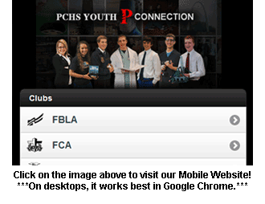

Our first order of business was to decide on a target audience. This audience is majorly composed of students, teachers, parents, and other school faculty interested in either joining or obtaining a better knowledge of the multiple organizations available at Polk County High School.
We then decided which clubs at our high school to feature, what information pertaining to each to include, and what extra pages, such as Contact and Resources, to include. In the creation of our site, we used a template, but while the individual pages originated from the same template, each club has a unique look. The similarities reside in the basic design of each such as the menu and page layout, but the content remains original and true only to that club.
The roles of each member on our team were also decided upon at this time. We had our graphic designer create the menu and edit any images. Our videographer gathered material for and created promotional videos for each club. The web designer did most of the creation of our desktop and mobile sites. We all assisted each other in small ways with each other's tasks. Next, we created a template to use for each page. We needed to make information, upcoming events, and multimedia relating to each club available. We also were required to include social media outlets and a way to access the local government. After establishing these guidelines, we created our template accordingly. To ensure that we would stay on track, we made a timeline and calendar via Google Docs showing when all of our goals were scheduled to be completed. Because members of our team were in different classes, information and updates, as well as different ideas were communicated through the use of Google Docs.
To decide on what pages to have and what content to include on each page, we made a plan of what we wanted our site to illustrate about each club. We included basic information such as membership requirements, activities, and officers. We decided to add a photo gallery that shows members at competitions or events. We also made a video to promote each and a contact page for each club that sends comments/questions to the advisor of the corresponding club. Lastly, a contact page for general questions about the site was included, and a resources page was included to describe the development of our site, show where we obtained pictures/information, and which programs were used in the development of our site.
To gather information, images, videos, and contact information relating to each club, we visited the teachers who act as advisors of each club. Also, we used the logos of all seven clubs with permission, we gathered more information from their respective national websites, and we took many of the pictures of club activities ourselves throughout the school year.
The template for the website was then created from scratch using Dreamweaver CS5.5. We created the template according to our blueprints, which were drawn previously, and we created the rest of the pages of our website from that template. We also made separate versions of each page in the event that users have Internet Explorer 8 or earlier, because Adobe Edge Preview 4, which was used to make our menu, is not compatible versions earlier than IE9. When a user goes to our website with an earlier version of IE, they will automatically be redirected to the compatible site, which uses Map capabilities to run our menu.
 Also, we created a mobile site. If a user goes to our website using a smartphone or tablet, they will automatically be redirected to a mobile version of our site that is much easier to view and use. We created spry tabbed panels within most of our pages to include the content without causing a page with excessive length. The content was made using Microsoft Word 2007 and then inserted into the pages of the site. Also, the images in the site were either obtained from the clubs' local advisors, obtained from the clubs' respective national sites, taken as a screenshot during development, or taken by one of our team members. All of the images were then edited using Adobe Photoshop CS5.5.
WOW Slider was incorporated on our home page to show pictures of activities involving each club. WOW Slider put the pictures into an interactive banner which links each picture to the corresponding club. On each club page, we used a JavaScript photo gallery created by MooTools. For the mobile site, we used Photo Swipe, an image gallery specifically intended for mobile and touch devices. We considered using only Map properties in Dreamweaver to create our top menu on the main site, but we decided to use Adobe Edge Preview 4 instead, because it uses pure HTML 5, CSS3, and Javascript. This enables it to be viewed on a larger variety of platforms, including iPhones and iPads. Google Calendar was used to show each club's upcoming events on each club's page. We also created a calendar including all the clubs' events, which is on the home page, contact page, resources page, and mobile site.
To publish the site, we uploaded it to cPanel using FTP. It is now live online and available to the public. We also checked validation on our site. Every page is completely validated in HTML5 according to W3C's validation standards. Lastly, testing was done. We tested our website on many of the latest browsers manually, which showed us excellent compatibility firsthand, but we also used Adobe BrowserLab to test our website on a PC, Mac, and several mobile devices.
We found that our website is compatible on Windows with Chrome 8+, on Windows and Mac with Firefox 4+, on Windows with Internet Explorer 9+, and on Mac with Safari 5+. Our site is also mostly compatible on many earlier browsers, including IE8, because we used image mapping capabilities to create a separate version of our site specifically for earlier versions of IE. When viewing on a mobile or touch device, users will automatically see the mobile version of our site. It works on all popular devices/platforms.
Note: The following sites were used in the research development of our sites. All summaries were in our own words. Any images or videos not obtained from the websites listed here were either photos or screenshots taken by us or obtained from the clubs' local advisors with permission.
Research Information was obtained from:
National FBLA. Web. 20 Jan 2012. <http://www.fbla-pbl.org/>.
National FCA. Web. 18 Jan 2012. <http://www.fca.org/>.
National FFA. Web. 26 Jan 2012. <http://www.ffa.org/>.
National HOSA. Web. 30 Jan 2012. <http://www.hosa.org/>.
National NHS. Web. 9 Feb 2012. <http://www.nhs.us/>.
National SkillsUSA. Web. 12 Jan 2012. <http://www.skillsusa.org/>.
National TSA. Web. 4 Feb 2012. <http://www.tsaweb.org/>.
Logos and Images were obtained with permission from:
PCHS FBLA Advisor - Dewey Esquinance
PCHS FCA Advisor - Travis Carroll
PCHS FFA Advisor - Curtis Trew
PCHS HOSA Advisor - Sandra Benson
PCHS NHS Advisor - Ann Rogers
PCHS SkillsUSA Advisor - Dewey Esquinance
PCHS TSA Advisor - Dewey Esquinance
Program Use Copyrights were obtained with permission from:
WOW Slider
MooTools scrollGallery
Photo Swipe